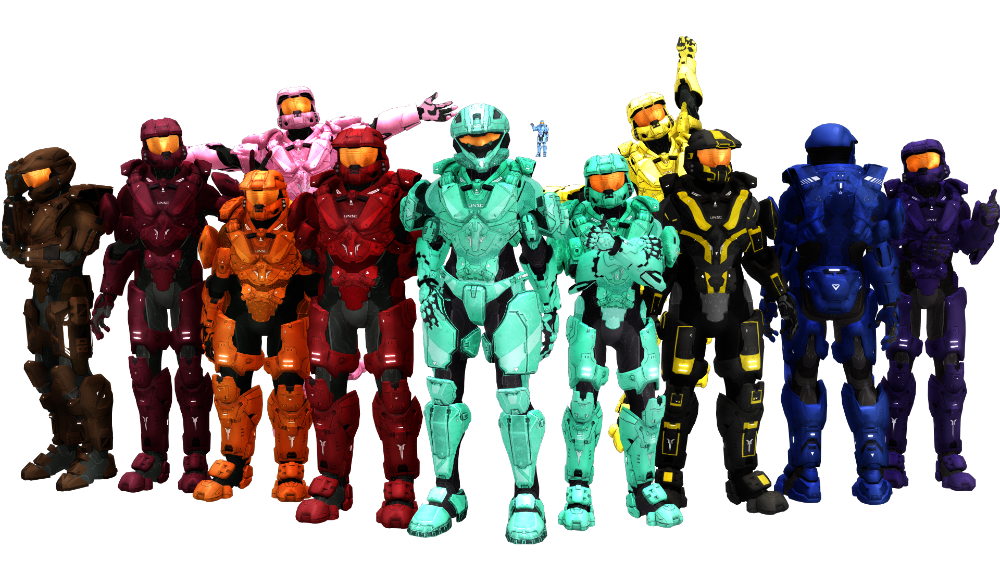

Exercise 06
Here is one of my favorite fandoms: Red vs Blue.
Red vs Blue (RvB for short) is an internet series created by a company
called Rooster Teeth. As of earlier this year, the series completed its
17th season.
This series follows the Reds and Blues, two groups of "soldiers" who
experience crazy adventures that includes things such as AIs,
freelancers, aliens, robots, mercenaries, fighting, explosions, a lot
of swearing, and who knows whatelse.
The style of this series is called machinima. This style takes
something that is already pre-rendered (or made) and puts a storyline to
it. In the case of this series, it is made using the Halo video
games, along with animation that is put in for certain things like fight
scenes.

Reds and Blues from left to right: Lopez, Simmons, Grif,
Donut, Sarge, Carolina, (Epsilon) Church, Tucker, Sister, Wash,
Caboose, and Doc.
Here is a list of the Reds and Blues and somethings about them.
The Reds
- Sarge-Wearing red armor, he's the leader of the
Reds. Having a Southern accent and carrying a shotgun, he comes up
with the strangest of plans and often wants to kill Grif. "How about
a tasty lead sandwich with a side of Sarge! Hold the life. And the
Mayo." - Sarge
- Simmons-In maroon armor, he's one of the smarter
people out of the two groups and a kiss-ass towards Sarge. He's
currently a cyborg, has trouble talking to girls, and has a fear of
snakes. "You're about to get Simmonsized!" - Simmons
- Grif-The guy in orange armor, he's a lazy bum and
has his life threatned by Sarge, a lot. He's usually
the one that drives the Warthog (a sort of jeep with a machine gun
mounted on it) and eats a lot (even stuff that is like 10 years old).
"Protect me, Cone!" - Grif
- Donut-Having lightish red (that's what he calls
his pink) armor, he's the "girl" of the group. He likes girly things,
appears to be gay, and doesn't speak Spanish all that well, but he
does throw a grenade really good. "Who wants to hold my ankles while
I stretch out my hammies?" - Donut
- Lopez-He's a robot with brown armor. The only
thing about him is that he only speaks Spanish, which means that no one really
understands what he's saying, and he's pretty much the mechanic for
the Reds. "Why do you bother to reply if you don't understand what I
say?" - Lopez
The Blues
- Church-With cobalt as his armor color, he's the de
facto leader of Blue Team. Though bad with a sniper rifle, he's a
complex character, for he is actually an AI and has come back several
times, which can be a bit complicated to understand him and his story
without a flowchart. Some other names he might go by are Alpha and
Epsilon. "Holy crap! Who is running this army!?" - Church
- Tucker-Aqua as his armor color, he makes a lot of
sexual comments. Carrying an alien energy sword, he was once
impregnated by an alien and has an alien child named Junior. As of
late, he has been more mature on certain things. "Bow-chika-bow-wow!"
- Tucker
- Caboose-He is the loveable idiot in blue armor.
Often times known for his team kills (*cough* Church *cough*), he
will befriend anything, from a talking bomb to an alien AI he named
Santa. "Time isn't made out of lines! It is made of circles. That is
why clocks are round." - Caboose
- Doc-Wearing purple armor, he is not truely a part
of Blue Team, though is often associated with them. He is actually a
pacifist medic. However, he once had an AI in his head which now
gives him a bit of a split personality from time-to-time, even though
the AI is gone. "I lettered in track in high school! It was the least
directly competitive sport I could find!" - Doc
- Sister (AKA Kaikaina Grif)-Wearing yellow armor,
she is the one that is sometimes hard to understand. She is
colorblind, throws a few wild raves, and can even ejaculate. ("Wait,
what?") "What's the grey guy so upset about?" - Sister
- Wash-The former Project Freelancer Agent
Washington, Wash wears black and yellow armor (but was cobalt and
yellow at one point). He doesn't like having an AI in his head after
an accident during his Freelancer days, but he becomes the de facto
leader of Blue Team when Church was no longer leading Blue Team. "Now
if you'll excuse me I need to go blow up this dead body." - Wash
- Carolina-Former member of Project Freelancer,
Carolina wears cyan armor. She currently leads Blue Team and is
actually the best fighter out of both teams. While things from her
past have troubled her, she has learned to be more of a teammate than
a leader with the Blues. "Call me sweetie again, and there's going to
be a knife inside of you." - Carolina
RvB Videos